Voetballen
In Driehuis zijn twee voetbalverenigingen aanwezig. Het gaat hierbij om V.V. Waterloo en RKVV Velsen. Hier kunnen de voetballiefhebbers zich optimaal inzetten om zich verder te ontwikkelen tot op het hoogste amateurniveau.
 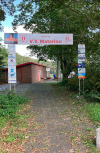
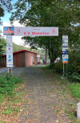
 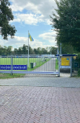
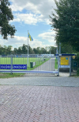
 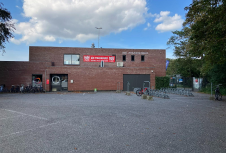
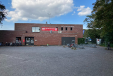
 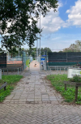
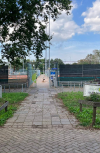
 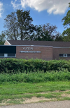
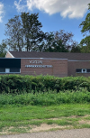
 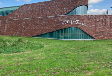
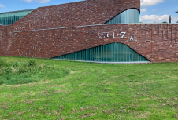